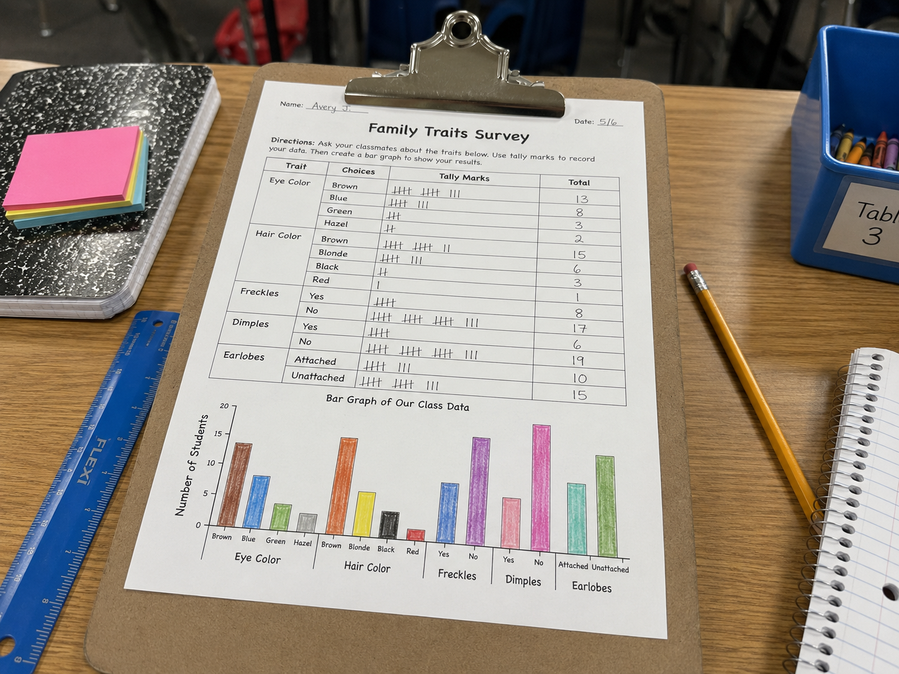

Hold that question as you work. By the end, you'll have data to help you answer it.
Look at the trait survey photo on the Lesson tab. Someone already did this investigation — they surveyed a real group and made a chart and graph. Before we learn anything new, just look carefully at their data.
There's no wrong observation. Scientists always start by looking carefully. We'll come back to your ideas at the end.
These are the words scientists use when studying inherited traits. Tap each card to flip it and read the definition. You'll see them throughout the investigation!
Copy this sentence carefully into your science notebook:
"Scientists collect and organize data about traits to find patterns in inheritance and variation."

A traitTraitA characteristic of an organism, like eye color or fur texture. is a characteristic that an organism gets from its parents. Eye color, fur patterns, leaf shape, and flower color are all traits. They get passed down from parents to offspring.
Scientists study traits by looking at groups of organisms and comparing what they see.
Scientists don't just look — they count and record. Tally marksTally MarksSmall marks used to count quickly. Every fifth mark goes diagonal. help keep track fast. When the counting is done, they organize everything into a chart or graph.
A bar graph makes patterns visible. One quick look and you can tell which trait is most common — and which ones vary.
Even in the same group, traits don't all look the same. Some dogs have curly fur; others have straight fur. Some flowers of the same species bloom pink, others white. That difference is called variationVariationDifferences in traits among individuals in the same group..
Variation is normal. It tells scientists that while traits are inherited, they don't always show up exactly the same way. Your data today will probably show variation too.
Inherited traits are passed from parents to offspring, but they don't always look exactly the same in every individual. Scientists collect and organize data to find patterns — and to see where variation exists within a group.
Curious? Go Deeper
Scientists who study heredity — how traits get passed down — are called geneticists. One of the first people to study this carefully was Gregor Mendel, a monk in the 1800s who spent years growing pea plants and tracking their traits. He noticed that some traits seemed to "skip" a generation and pop back up later. He didn't have the word "gene" yet, but he figured out that traits follow predictable patterns.
Today, scientists know that the environment can also change how traits show up. A plant grown in the shade may stay short even if it inherited genes for being tall. A dog that gets lots of exercise might look quite different from its sibling who doesn't. Traits are inherited — but the environment shapes them too. That's why studying variation is so interesting.
You'll need: Science notebook, pencil, colored pencils, and a ruler for the bar graph.
You're going to survey a group of organisms and collect trait data, just like a scientist. Follow each step carefully and record your work as you go.
Choose your traits. Pick 4–5 traits to survey from this list: eye color, hair color, freckles (yes/no), dimples (yes/no), earlobes (attached/unattached). Write the trait names across the top of a chart in your notebook.
Survey your group. Look at yourself first — record your own traits. Then use the data provided (family photo, chart, or list) to add at least 5–10 more individuals to your tally chart. Use tally marks as you go.
Count and record totals. Count your tally marks for each trait and write the total. Check your work — tally marks should group in fives to make counting easy.
Build your bar graph. Use a ruler to draw a bar graph showing your results. Label the x-axis with the trait options, and the y-axis with numbers for the count. Color each bar a different color. Give your graph a title: "Bar Graph of Our Group Data."
Look for patterns. Study your graph. Which trait is most common? Which has the most variation? Circle one example of variation in your data and label it in your notebook.
In your science notebook, answer each question carefully. A good scientist writes exactly what they saw — not just "I found something interesting."
Tell the story of your investigation from beginning to end — what you counted, what you noticed in your graph, and what you figured out about the group's traits.
Think through each question on your own. Write your answers in your science notebook before moving on.
📋 Part A — Show Your Survey Data
Make sure your investigation work is organized and complete.
🚀 Part B — Short Answer
Answer each question in complete sentences. Use your science vocabulary!
What does your data tell you about inherited traits and variation in your group?
What did you observe?
💡 Start with: "When I surveyed the group, I noticed that…"
What does your data tell you?
💡 Start with: "My data shows that… because…"
Why does that make sense?
💡 Start with: "This makes sense because inherited traits…"
📚 Try to use at least one of these words: trait, variation, evidence, inherited
🎨 Part C — Draw & Label
Draw two organisms that belong to the same group but show variation in at least one trait. Label the trait that is shared and the trait that varies.
Submit your work on Canvas using one of these options:
Make sure your submission includes all of these: